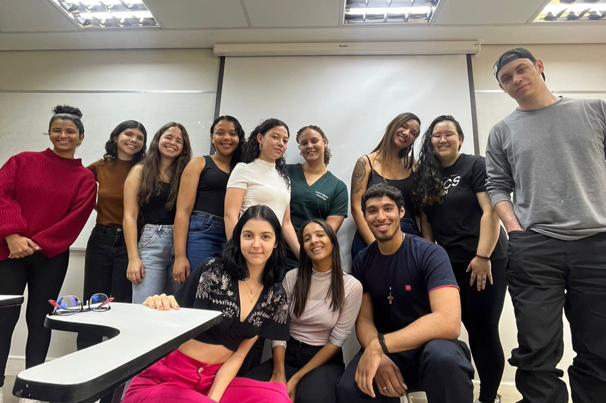
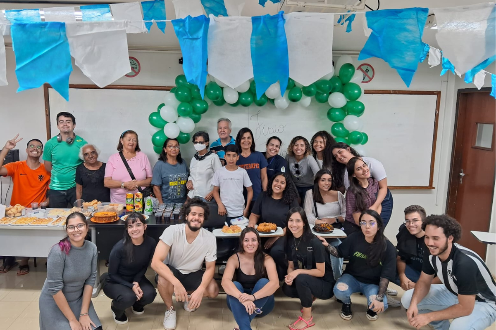
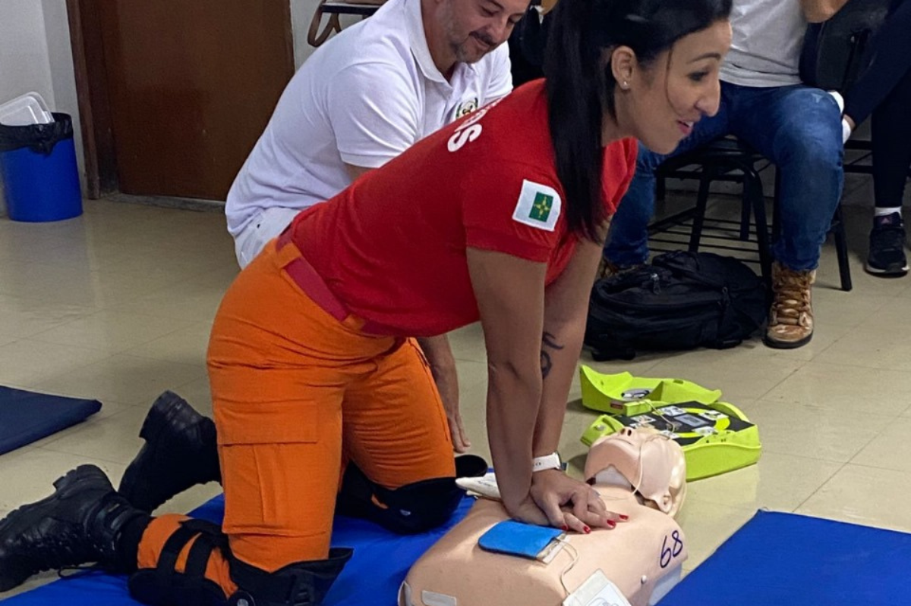
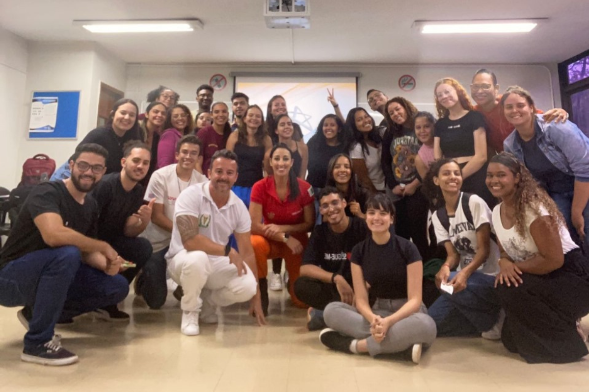
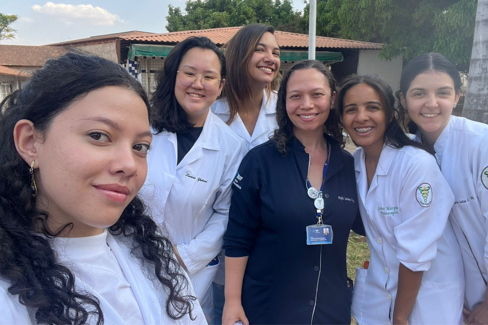
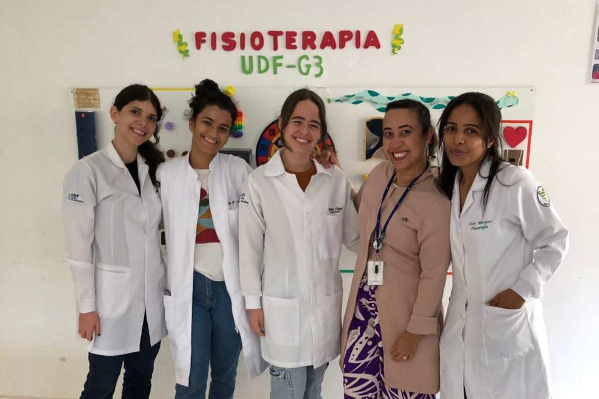
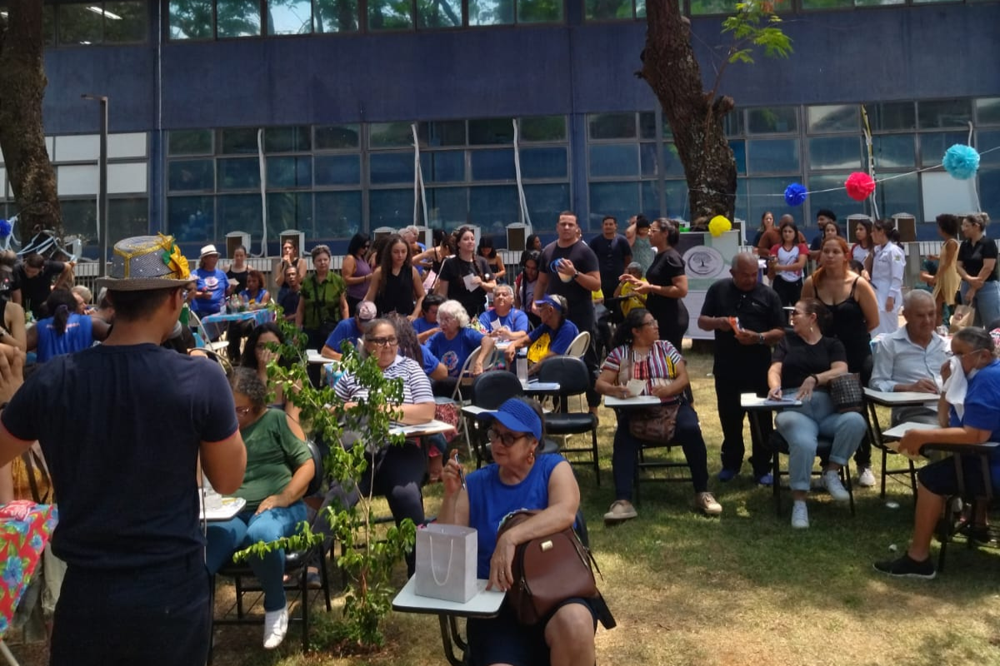
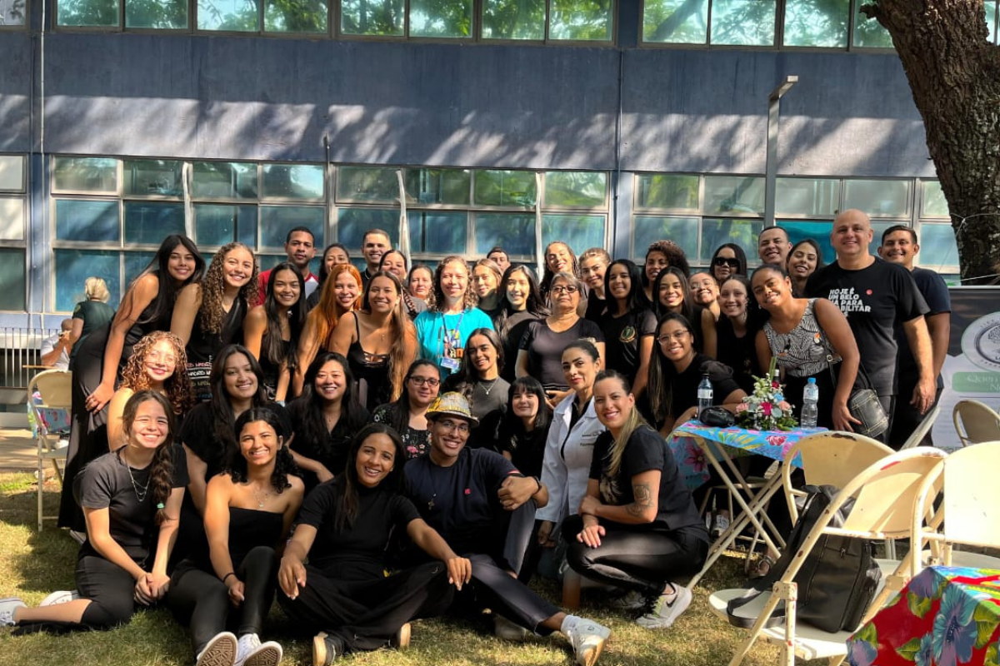
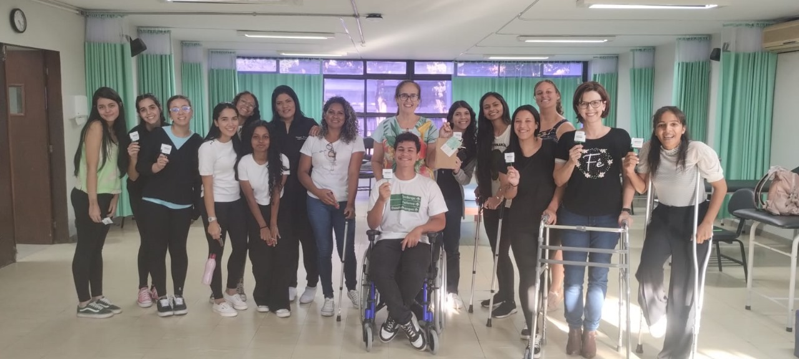

Liga Acadêmica de Gerontologia
Missão
Desenvolver trabalhos científicos provendo pesquisas que visem e aprimore técnicas e abordagem em saúde do idoso.
Foco das Atividades
- Gerontologia
- Promover atividades teóricas e práticas
- Desenvolver trabalhos científicos
- Atividades de campo Prevennção e assistência ao Idoso
- Estender o conhecimento em saúde do Idoso
- Crescimento acadêmico e profissional
Diretoria
Atualmente a liga possui 7 membros.
São membros da diretoria:
•
Presidente: Zaine Marques
•
Vice Presidente: Daniele Andrade
•
Secretariado: Letícia Tamires
•
Marketing: Sabrina Fontenele
•
Financeiro: Cristiano Neres
•
Pesquisa: Vinícius Andrade e Laura Beatriz
•
Mídia: Gabriel Soares
•
Professora Orientadora: Maria Carolina Mascarenhas.
Criação
A Liga Acadêmica de Gerontologia do UDF foi criada em 2022.
Contato
Fique a vontade para enviar uma mensagem no e-mail oficial da LAG.
E-mail: ligaacademica.lagudf@gmail.com
Atividades Realizadas:
Encontros em Sala
 Descrição: Nossos encontros em sala são momentos-chave de troca de conhecimento e planejamento, fortalecendo a colaboração entre os membros e impulsionando o crescimento coletivo e individual.
Mini Curso de Prevenção de Acidentes Domésticos e Primeiros Socorros ao Idoso
 Descrição: Mini Curso de Prevenção de Acidentes Domésticos e Primeiros Socorros ao Idoso, com o intuito de capacitar participantes em práticas seguras e efetivas para a proteção da população idosa. O curso abordou temas essenciais relacionados à segurança no ambiente doméstico, identificação de riscos comuns e procedimentos básicos de primeiros socorros.
Visita ao Lar de Idosos
 Descrição: A Liga Acadêmica de Gerontologia organizou uma visita ao Lar de Idosos, com o objetivo de promover a interação social entre os acadêmicos e os residentes, além de oferecer apoio emocional e atividades recreativas aos idosos. Essa visita faz parte do compromisso da liga com a promoção do bem-estar e da saúde da população idosa.
Bindo Dia do Idoso
 Descrição: A LAG organizou um bingo especial em comemoração ao Dia do Idoso, celebrado em 1º de outubro. O evento teve como objetivo promover a inclusão social, a interação entre os idosos e a valorização da experiência e sabedoria da população idosa.
Minicurso de Transferência e Posicionamento
Descrição: Nossa Liga Acadêmica realizou um minicurso de Transferência e Posicionamento, com o objetivo de capacitar acadêmicos e profissionais da área da saúde em técnicas adequadas para a transferência e posicionamento de pacientes, especialmente idosos e pessoas com mobilidade reduzida. O minicurso abordou a importância dessas técnicas para a prevenção de lesões e promoção do conforto dos pacientes.